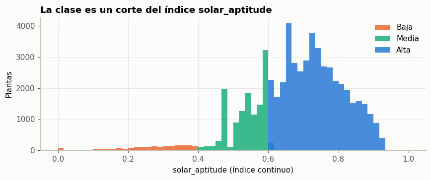

8. Fuga de datos y selección de variables#
Una variable produce fuga de datos (data leakage) cuando contiene información que no estaría disponible al momento de predecir o que, directa o indirectamente, define la variable objetivo. Incluirla da métricas artificialmente altas y un modelo inútil en la práctica.
Se excluyen seis columnas, igual que en la segunda entrega.
8.1 solar_aptitude y solar_aptitude_rounded: definen la clase#
pd.crosstab(df["solar_aptitude_rounded"], df[TARGET])
| solar_aptittude_class | Baja | Media | Alta |
|---|---|---|---|
| solar_aptitude_rounded | |||
| 0 | 71 | 0 | 0 |
| 1 | 185 | 0 | 0 |
| 2 | 450 | 0 | 0 |
| 3 | 740 | 0 | 0 |
| 4 | 446 | 372 | 0 |
| 5 | 0 | 6379 | 0 |
| 6 | 0 | 6040 | 6229 |
| 7 | 0 | 0 | 19398 |
| 8 | 0 | 0 | 13163 |
| 9 | 0 | 0 | 5505 |
fig, ax = plt.subplots(figsize=(8, 3.4))
for c in CLASS_ORDER:
ax.hist(df.loc[df[TARGET] == c, "solar_aptitude"], bins=60, range=(0, 1),
color=CLASS_COLORS[c], label=c, alpha=0.85)
ax.set_xlabel("solar_aptitude (índice continuo)")
ax.set_ylabel("Plantas")
ax.set_title("La clase es un corte del índice solar_aptitude")
ax.legend()
plt.tight_layout(); plt.show()

La clase es un corte directo del índice continuo solar_aptitude. Valores redondeados de 0 a 3 son siempre Baja, de 7 a 9 siempre Alta, y solo los niveles 4 y 6 mezclan dos clases adyacentes. Con estas variables el modelo «predeciría» la clase copiándola, por lo que se excluyen ambas.
8.2 Variables posteriores a la decisión de inversión#
excl = pd.DataFrame({
"variable": ["capacity", "optimal_tilt", "pv_potential", "operational_status"],
"motivo": [
"Potencia instalada: se decide después de evaluar el sitio.",
"Ángulo de diseño de los paneles: parámetro de ingeniería del proyecto, posterior a la elección del sitio.",
"Producción esperada por kWp: resultado del diseño del sistema, no una característica previa del terreno.",
"Fase del proyecto (operando, cancelado...): describe lo que pasó con la inversión, no el sitio.",
],
})
excl
| variable | motivo | |
|---|---|---|
| 0 | capacity | Potencia instalada: se decide después de evalu... |
| 1 | optimal_tilt | Ángulo de diseño de los paneles: parámetro de ... |
| 2 | pv_potential | Producción esperada por kWp: resultado del dis... |
| 3 | operational_status | Fase del proyecto (operando, cancelado...): de... |
rho = df[["capacity", "optimal_tilt", "pv_potential", "solar_aptitude"]].corr("spearman")["solar_aptitude"].drop("solar_aptitude")
rho.round(3).rename("ρ con solar_aptitude").to_frame()
| ρ con solar_aptitude | |
|---|---|
| capacity | -0.034 |
| optimal_tilt | -0.290 |
| pv_potential | -0.050 |
El objetivo del modelo es evaluar un sitio antes de construir. Por eso solo se admiten características del terreno, el clima y la ubicación. Estas cuatro variables se conocen después de decidir la inversión y se excluyen por coherencia con el caso de uso. optimal_tilt merece una mención especial: en una iteración previa de la segunda entrega, usarla en lugar de slope, aspect y curvature hizo caer el recall de Baja casi a 0.
8.3 Identificadores y variables descriptivas#
OBJECTID,codeyplant_nameidentifican cada planta y no aportan información predictiva generalizable.country(183 niveles) ysizeno forman parte de las 17 predictoras.countrylo resumen las coordenadas (capítulo 5), ysizederiva dearea.
8.4 Conjunto final de predictoras#
from sklearn.compose import ColumnTransformer
from sklearn.impute import SimpleImputer
from sklearn.pipeline import Pipeline
from sklearn.preprocessing import OneHotEncoder, StandardScaler
from sklearn.model_selection import train_test_split
X = df[NUMERIC + CATEGORICAL]
y = df[TARGET]
X_train, X_test, y_train, y_test = train_test_split(
X, y, test_size=0.2, stratify=y, random_state=SEED)
pre = ColumnTransformer([
("num", Pipeline([("imp", SimpleImputer(strategy="median")),
("esc", StandardScaler())]), NUMERIC),
("cat", OneHotEncoder(handle_unknown="ignore"), CATEGORICAL),
])
Xt = pre.fit_transform(X_train)
print(f"Predictoras originales: {X.shape[1]} ({len(NUMERIC)} numéricas + {len(CATEGORICAL)} categóricas)")
print(f"Columnas tras el preprocesamiento: {Xt.shape[1]}")
print(f"Entrenamiento: {X_train.shape[0]:,} filas | Prueba: {X_test.shape[0]:,} filas")
Predictoras originales: 17 (13 numéricas + 4 categóricas)
Columnas tras el preprocesamiento: 39
Entrenamiento: 47,182 filas | Prueba: 11,796 filas
Se obtiene el mismo vector de 39 columnas de la segunda entrega: 13 numéricas más 26 binarias del one-hot. El preprocesamiento se ajusta solo con el conjunto de entrenamiento, dentro del pipeline, para que la mediana de imputación y los parámetros de escalado no se filtren desde el conjunto de prueba.